TCGA-BRCA RNA & RPPA: Differential Expression, Concordance and Visualization
RNA_RPPA_DEA_workflow.Rmd
library(OmicsKit)
data(brca_metadata)
data(brca_rna_dea_er_pos_vs_er_neg)
data(brca_rna_dea_tumor_vs_normal)
data(brca_rna_metadata_er_shared)
data(brca_rna_metadata_tumor_normal)
data(brca_rna_vst_or_logexpr_small)
data(brca_rna_expr_er_shared_filtered)
data(brca_rna_expr_tumor_normal_filtered)
data(brca_rppa_dea_gene_er_pos_vs_er_neg)
data(brca_rppa_expr_gene_er_shared)
data(brca_concordance_rna_rppa_er)
data(brca_crosslayercorr_rna_rppa_er)These package objects are TCGA-BRCA-derived examples prepared from
UCSC Xena data. The RNA-seq objects were derived from log2-normalized
TCGA HiSeqV2 expression matrices, while RPPA examples were generated
from the TCGA RPPA matrix with explicit protein-feature-to-gene
mappings. Differential-expression tables, compact expression matrices,
concordance summaries, and pre-rendered figures are shipped with
OmicsKit so that this vignette does not download data or read raw files
at build time. PNG figures are displayed from
vignettes/figures/, and the displayed code also writes PDF
companions to the same folder when run interactively.
1. Power Analysis
Power analysis is a useful first check before running a large differential-expression analysis. TCGA-BRCA includes roughly 1100 tumor samples and 113 adjacent normal samples, but the analysis still tests about 20,000 genes simultaneously. Bulk RNA-seq studies often show biological dispersion near 0.1, so even a well-powered cohort needs multiple-testing correction in mind. Here we estimate the minimum per-group sample size needed to detect a log2 fold-change of 1 at 80% power.
pa_result <- power_analysis(
effect_size = 1, # log2FC = 1 detectable minimum
dispersion = 0.1, # typical bulk RNA-seq biological variance
n_genes = 20000,
prop_de = 0.05, # ~5% DE expected
alpha = 0.05,
power_target = 0.8,
max_n = 30,
plot = TRUE
)
cat("Minimum samples per group needed:", pa_result$min_sample_size, "\n")
#> Minimum samples per group needed: 7
pa_result$plot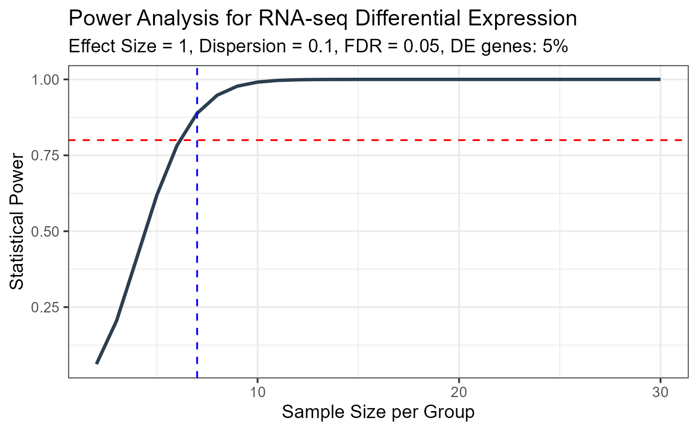
ggplot2::ggsave("vignettes/figures/power_analysis.png",
pa_result$plot, width = 8, height = 5, dpi = 150)
grDevices::pdf("vignettes/figures/power_analysis.pdf",
width = 8, height = 5)
print(pa_result$plot)
grDevices::dev.off()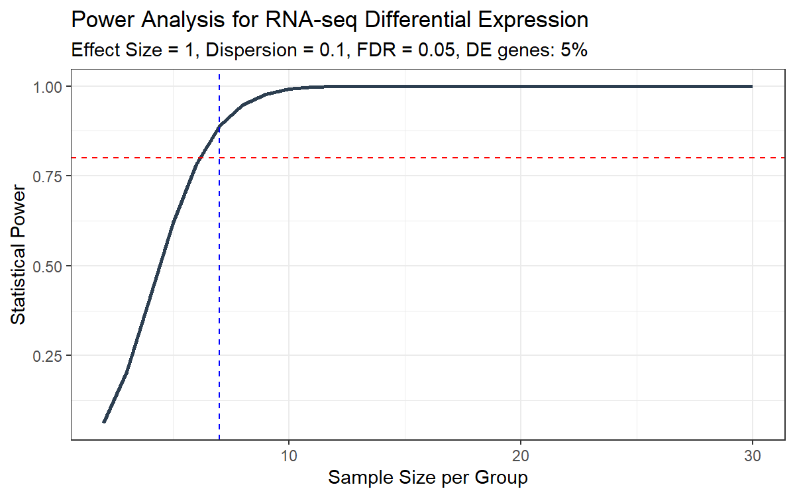
Power analysis for a bulk RNA-seq differential-expression workflow with TCGA-BRCA-like assumptions.
With TCGA-BRCA we have N >> minimum required, giving high power to detect even modest fold-changes.
2. Unsupervised Expression Visualization
The object brca_rna_vst_or_logexpr_small contains the
top 1000 most variable genes from the ER-positive vs ER-negative RNA-seq
matrix. This compact matrix is suitable for PCA, UMAP, and t-SNE
examples without shipping a full expression matrix in the vignette. The
dimensionality-reduction helpers join annotations by an
"id" column, so the sample barcodes are copied from row
names before plotting.
2.1 PCA
metadata_dim <- brca_rna_metadata_er_shared
metadata_dim$id <- rownames(metadata_dim)
p_pca <- nice_PCA(
object = brca_rna_vst_or_logexpr_small,
annotations = metadata_dim,
variables = c(fill = "ER_group"),
legend_names = c(fill = "ER status"),
colors = c("steelblue", "firebrick"),
shapes = c(21, 21),
title = "TCGA-BRCA: PCA by ER status"
)
p_pca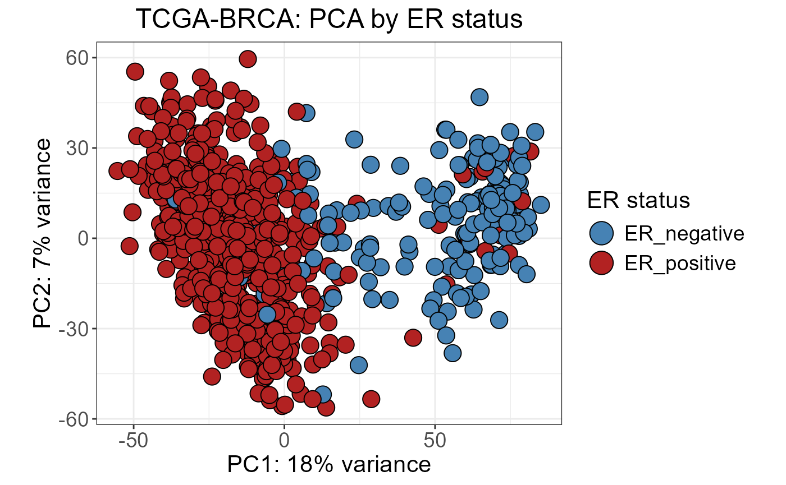
ggplot2::ggsave("vignettes/figures/brca_pca_rna_er_status.png",
p_pca, width = 7, height = 5, dpi = 150)
grDevices::pdf("vignettes/figures/brca_pca_rna_er_status.pdf",
width = 7, height = 5)
print(p_pca)
grDevices::dev.off()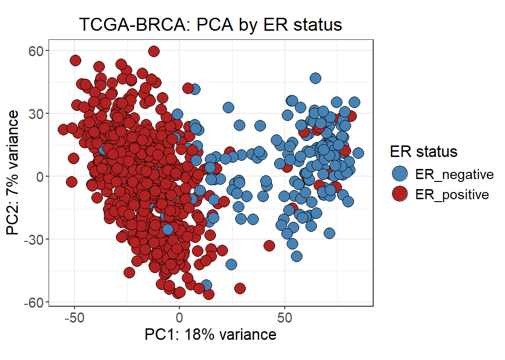
PCA of top-1000 variable genes from TCGA-BRCA RNA-seq, colored by ER status.
2.2 UMAP
metadata_dim <- brca_rna_metadata_er_shared
metadata_dim$id <- rownames(metadata_dim)
p_umap <- nice_UMAP(
object = brca_rna_vst_or_logexpr_small,
annotations = metadata_dim,
variables = c(fill = "ER_group"),
legend_names = c(fill = "ER status"),
colors = c("steelblue", "firebrick"),
shapes = c(21, 21),
seed = 2025,
title = "TCGA-BRCA: UMAP by ER status"
)
p_umap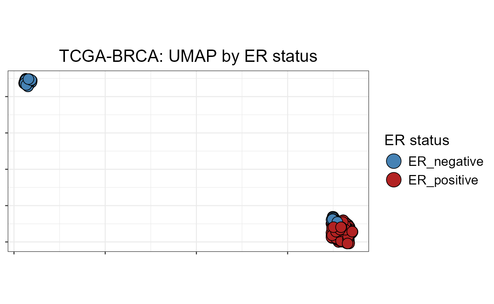
ggplot2::ggsave("vignettes/figures/brca_umap_rna_er_status.png",
p_umap, width = 7, height = 5, dpi = 150)
grDevices::pdf("vignettes/figures/brca_umap_rna_er_status.pdf",
width = 7, height = 5)
print(p_umap)
grDevices::dev.off()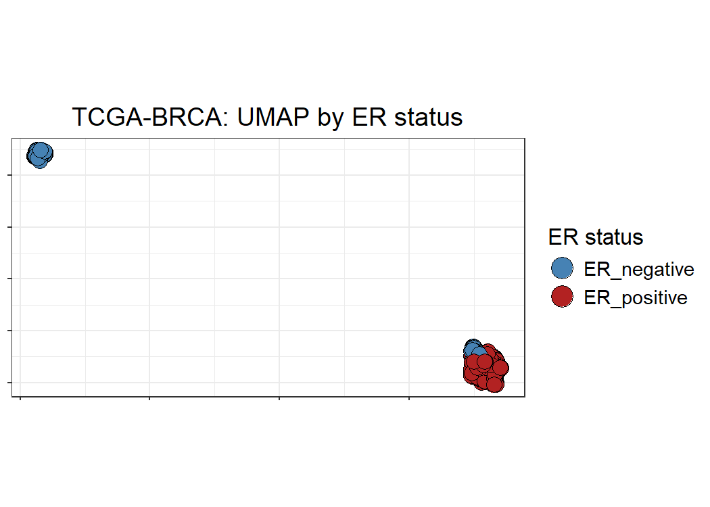
UMAP of top-1000 variable genes from TCGA-BRCA RNA-seq, colored by ER status.
2.3 t-SNE
metadata_dim <- brca_rna_metadata_er_shared
metadata_dim$id <- rownames(metadata_dim)
p_tsne <- nice_tSNE(
object = brca_rna_vst_or_logexpr_small,
annotations = metadata_dim,
variables = c(fill = "ER_group"),
legend_names = c(fill = "ER status"),
colors = c("steelblue", "firebrick"),
shapes = c(21, 21),
seed = 2025,
title = "TCGA-BRCA: t-SNE by ER status"
)
p_tsne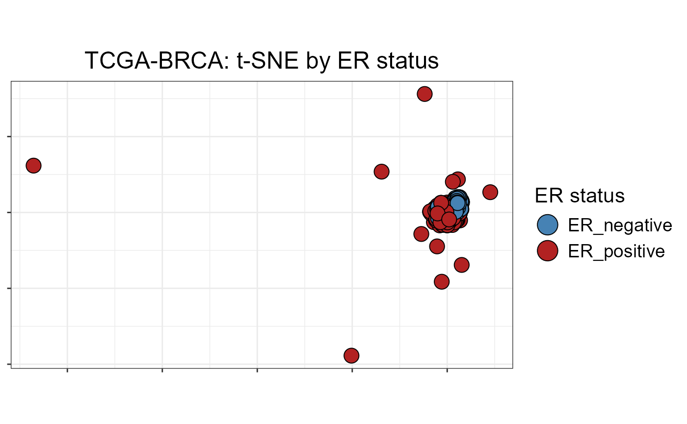
ggplot2::ggsave("vignettes/figures/brca_tsne_rna_er_status.png",
p_tsne, width = 7, height = 5, dpi = 150)
grDevices::pdf("vignettes/figures/brca_tsne_rna_er_status.pdf",
width = 7, height = 5)
print(p_tsne)
grDevices::dev.off()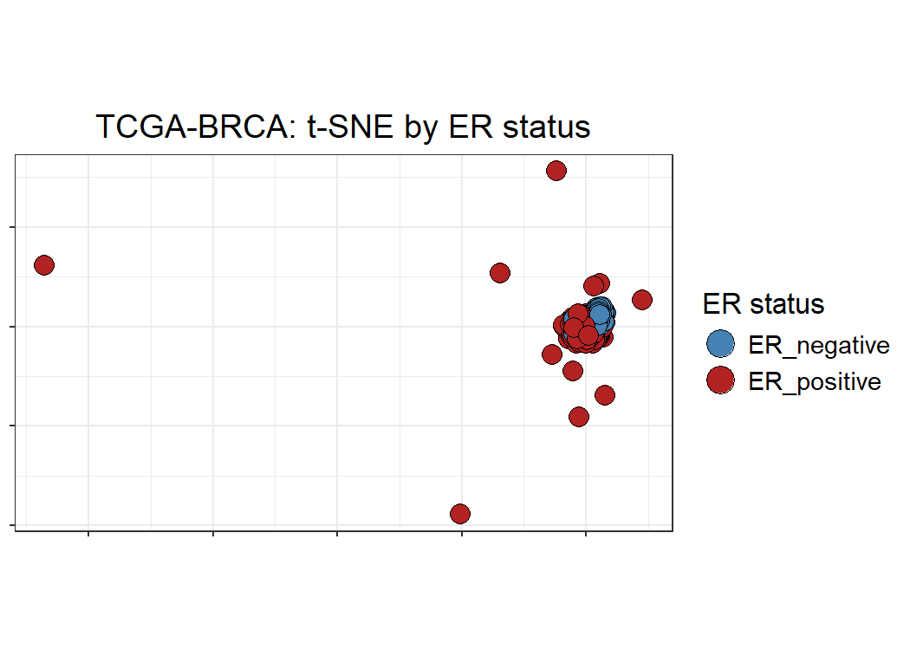
t-SNE of top-1000 variable genes from TCGA-BRCA RNA-seq, colored by ER status.
3. ER-positive vs ER-negative Comparison
The ER-positive vs ER-negative comparison uses primary tumor samples
only. The contrast is ER_positive - ER_negative from a
limma workflow, so logFC > 0 means higher abundance in
ER-positive tumors. RNA-seq and RPPA results are summarized separately
because RNA and protein dynamic ranges differ.
er_sig <- sum(brca_rna_dea_er_pos_vs_er_neg$padj < 0.05, na.rm = TRUE)
rp_sig <- sum(brca_rppa_dea_gene_er_pos_vs_er_neg$padj < 0.05, na.rm = TRUE)
data.frame(
layer = c("RNA-seq", "RPPA"),
n_features = c(
nrow(brca_rna_dea_er_pos_vs_er_neg),
nrow(brca_rppa_dea_gene_er_pos_vs_er_neg)
),
n_FDR_lt_0.05 = c(er_sig, rp_sig)
)
#> layer n_features n_FDR_lt_0.05
#> 1 RNA-seq 18129 13974
#> 2 RPPA 153 103
table(brca_rna_metadata_er_shared$ER_group)
#>
#> ER_negative ER_positive
#> 179 6014. Gene Annotations
get_annotations() queries Ensembl BioMart, here shown
for Ensembl v112, and add_annotations() joins the
annotation table to the differential-expression result using gene IDs as
keys. This section is not evaluated during vignette builds because it
requires internet access and BioMart queries can be slow or temporarily
unavailable. The shipped object
brca_rna_dea_er_pos_vs_er_neg already contains a
gene_symbol column precomputed from this workflow.
# Step 1: fetch annotations for genes in ER DEA (eval = FALSE)
er_gene_ids <- brca_rna_dea_er_pos_vs_er_neg$gene_id
annotations <- get_annotations(
ensembl_ids = er_gene_ids,
species = "hsapiens_gene_ensembl",
version = "112",
mode = "genes",
filename = NULL # return data frame, do not write file
)
# Step 2: join symbol and biotype to DEA table
brca_rna_dea_er_annotated <- add_annotations(
object = brca_rna_dea_er_pos_vs_er_neg,
reference = annotations,
variables = c("symbol", "biotype", "chromosome")
)
head(brca_rna_dea_er_annotated[, c("gene_id", "symbol", "logFC", "padj")])5. Filtering Genes by Expression Detectability and Trend
detect_filter() identifies genes that are actually
expressed above baseMean and mean-count thresholds in the groups of
interest. This prevents reporting genes that are technically significant
but biologically undetectable. trend_filter() is
complementary: for paired or ordered comparisons it checks that the
fold-change direction is patient-level consistent, removing genes that
are significant mainly because of a few outlier patients. Both functions
are shown with eval = FALSE because
trend_filter() requires validated paired tumor-normal
relationships and full-size expression matrices. Run these examples only
after confirming that the metadata and expression matrices use the same
sample identifiers.
5.1 detect_filter
# detect_filter requires a column named "ensembl" in the DEA results
res_tn <- brca_rna_dea_tumor_vs_normal
colnames(res_tn)[colnames(res_tn) == "gene_id"] <- "ensembl"
rownames(res_tn) <- res_tn$ensembl
# Get sample IDs per group from metadata
samples_normal <- rownames(brca_rna_metadata_tumor_normal)[
brca_rna_metadata_tumor_normal$rna_tumor_normal == "Normal"
]
samples_tumor <- rownames(brca_rna_metadata_tumor_normal)[
brca_rna_metadata_tumor_normal$rna_tumor_normal == "Tumor"
]
detected <- detect_filter(
norm.counts = as.data.frame(brca_rna_expr_tumor_normal_filtered),
df.BvsA = res_tn,
samples.baseline = samples_normal,
samples.condition1 = samples_tumor,
cutoffs = c(50, 50, 0)
)
cat("Total detectable genes:", length(detected$DetectGenes), "\n")
head(detected$Comparison1)5.2 trend_filter
Note:
trend_filter()is designed for paired/ordered comparisons where patient-level pairing has been validated. The Tumor vs Normal example requires confirmed patient-level pairing. Run this only after validating your metadata.
# Requires validated patient-level pairing in metadata
# The gene.col and lfc.col must match columns in the results data frame
tn_metadata <- brca_rna_metadata_tumor_normal
tn_metadata$sample_id <- rownames(tn_metadata)
tn_metadata$patient_id <- tn_metadata$patient
trend_res <- trend_filter(
expr = brca_rna_expr_tumor_normal_filtered,
sampledata = tn_metadata,
results = list(Tumor_vs_Normal = res_tn),
baseline = "Normal",
conditions = c(Tumor_vs_Normal = "Tumor"),
sample.col = "sample_id",
patient.col = "patient_id",
group.col = "rna_tumor_normal",
gene.col = "ensembl",
lfc.col = "logFC",
scale = "log2"
)
# Genes retained after trend consistency filter
cat("Trend-consistent genes:", length(trend_res$filtered_genes), "\n")6. Saving Top Marker Tables
save_results() exports three .xlsx files
from a DEA data frame: all genes, upregulated markers, and downregulated
markers. This makes it easy to share marker tables with collaborators.
The example is shown with eval = FALSE because it writes
files to disk.
# Save ER+ vs ER- RNA-seq top markers (eval = FALSE)
save_results(
df = brca_rna_dea_er_pos_vs_er_neg,
name = "BRCA_RNA_ER_pos_vs_ER_neg",
l2fc = 1,
cutoff_alpha = 0.05
)
# Creates:
# BRCA_RNA_ER_pos_vs_ER_neg_full.xlsx
# BRCA_RNA_ER_pos_vs_ER_neg_up_log2FC>1_FDR<0.05.xlsx
# BRCA_RNA_ER_pos_vs_ER_neg_down_log2FC<1_FDR<0.05.xlsx
# Save RPPA top markers
save_results(
df = brca_rppa_dea_gene_er_pos_vs_er_neg,
name = "BRCA_RPPA_ER_pos_vs_ER_neg",
l2fc = 0.2,
cutoff_alpha = 0.05
)7. Volcano Plots
nice_Volcano() displays genome-wide differential results
with automatic labeling of top hits, triangle markers for extreme
p-values, and color coding for upregulated, downregulated, and
non-significant genes. We show three volcanoes: RNA-seq Tumor vs Normal,
RNA-seq ER-positive vs ER-negative, and RPPA ER-positive vs ER-negative.
Each plotting call is shown as eval = FALSE code followed
by a prerendered figure. y_max = 15 is used for all three
volcano calls; the RPPA volcano uses a smaller x_range and
cutoff_x because RPPA fold-changes are compressed relative
to RNA-seq.
7.1 RNA-seq: Tumor vs Normal
p_vol_tn <- nice_Volcano(
results = brca_rna_dea_tumor_vs_normal,
x_var = "logFC",
y_var = "padj",
label_var = "gene_symbol",
title = "RNA-seq: Tumor vs Normal",
cutoff_y = 0.05,
cutoff_x = 1,
x_range = 10,
y_max = 15
)
ggplot2::ggsave("vignettes/figures/brca_volcano_rna_tumor_vs_normal.png",
p_vol_tn, width = 8, height = 6, dpi = 150)
grDevices::pdf("vignettes/figures/brca_volcano_rna_tumor_vs_normal.pdf",
width = 8, height = 6)
print(p_vol_tn)
grDevices::dev.off()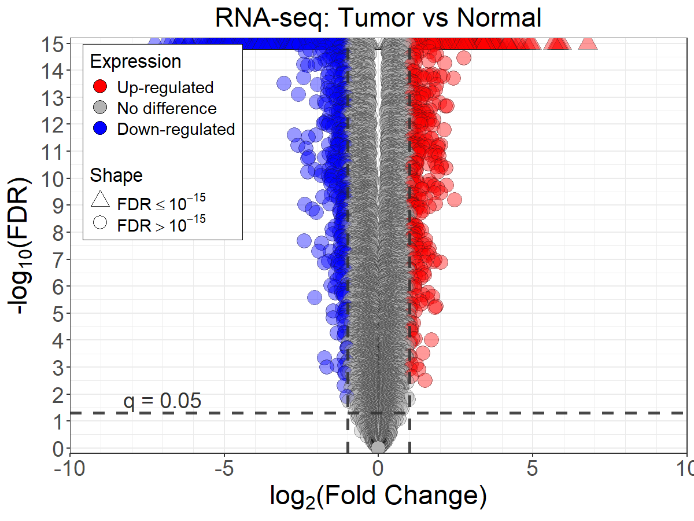
RNA-seq DEA Tumor vs Normal. Positive logFC = higher in tumor. Triangles indicate FDR < 10^-15.
7.2 RNA-seq: ER+ vs ER-
p_vol_er_rna <- nice_Volcano(
results = brca_rna_dea_er_pos_vs_er_neg,
x_var = "logFC",
y_var = "padj",
label_var = "gene_symbol",
title = "RNA-seq: ER-positive vs ER-negative",
cutoff_y = 0.05,
cutoff_x = 1,
x_range = 10,
y_max = 15
)
ggplot2::ggsave("vignettes/figures/brca_volcano_rna_er_pos_vs_er_neg.png",
p_vol_er_rna, width = 8, height = 6, dpi = 150)
grDevices::pdf("vignettes/figures/brca_volcano_rna_er_pos_vs_er_neg.pdf",
width = 8, height = 6)
print(p_vol_er_rna)
grDevices::dev.off()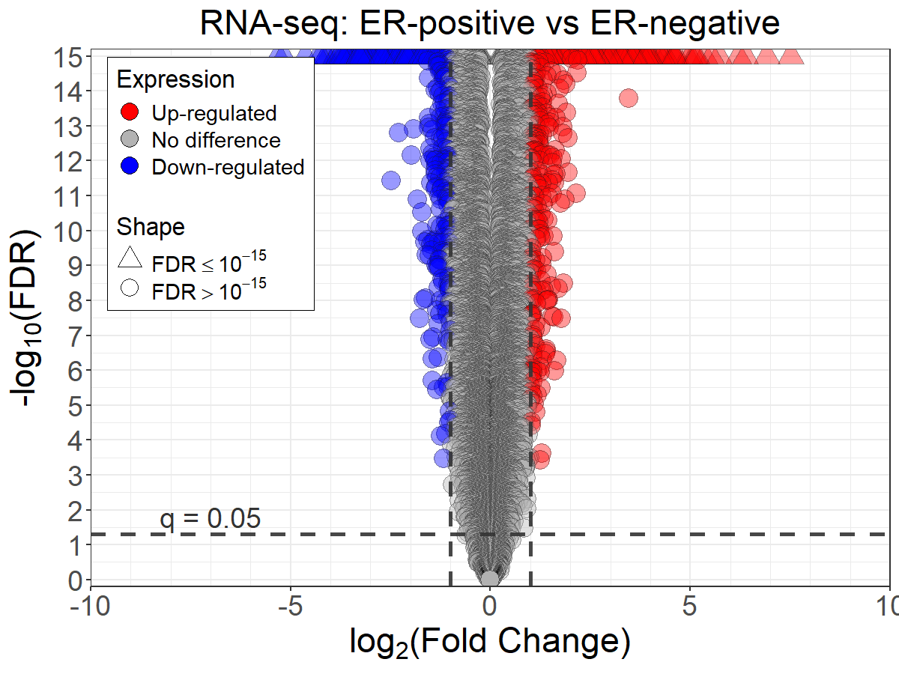
RNA-seq DEA ER-positive vs ER-negative primary tumors. Top ER-associated markers (ESR1, PGR, GATA3) appear as strongly upregulated in ER+.
7.3 RPPA: ER+ vs ER-
p_vol_er_rppa <- nice_Volcano(
results = brca_rppa_dea_gene_er_pos_vs_er_neg,
x_var = "logFC",
y_var = "padj",
label_var = "gene",
title = "RPPA: ER-positive vs ER-negative",
cutoff_y = 0.05,
cutoff_x = 0.20,
x_range = 2,
y_max = 15
)
ggplot2::ggsave("vignettes/figures/brca_volcano_rppa_er_pos_vs_er_neg.png",
p_vol_er_rppa, width = 8, height = 6, dpi = 150)
grDevices::pdf("vignettes/figures/brca_volcano_rppa_er_pos_vs_er_neg.pdf",
width = 8, height = 6)
print(p_vol_er_rppa)
grDevices::dev.off()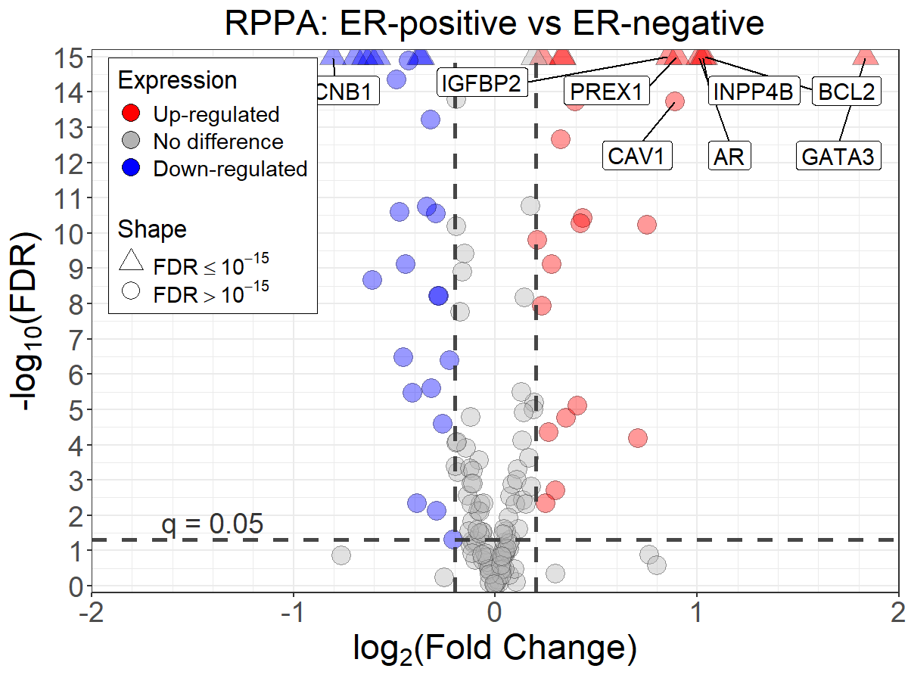
RPPA DEA ER-positive vs ER-negative. logFC scale is compressed vs RNA-seq; cutoff_x = 0.20 reflects RPPA dynamic range.
8. RNA–RPPA Cross-Layer Concordance
Integrating RNA-seq and RPPA data for the same comparison allows us
to assess transcription-to-protein concordance. Genes concordant in both
layers provide stronger evidence of true biological change. OmicsKit
provides three complementary functions: concordanceDE()
classifies genes into concordant, discordant, only_x, only_y, and
not_significant categories and computes a concordance score.
crossLayerCorr() computes sample-level Spearman
correlations between the two omics layers using the most variable shared
features. nice_ConcordanceScatter() visualizes the
logFC-logFC relationship between layers.
8.1 concordanceDE
The package includes the precomputed output of
concordanceDE() as
brca_concordance_rna_rppa_er.
# The object is already the output of concordanceDE()
# Explore the concordance summary
brca_concordance_rna_rppa_er$summary
#>
#> concordant discordant only_x only_y not_significant
#> 20 0 9 32 88
cat("Concordance score (RNA vs RPPA, ER comparison):",
brca_concordance_rna_rppa_er$concordance_score, "\n")
#> Concordance score (RNA vs RPPA, ER comparison): 1
cat("Shared genes:", brca_concordance_rna_rppa_er$n_shared_genes, "\n")
#> Shared genes: 149
cat("Both significant:", brca_concordance_rna_rppa_er$n_both_significant, "\n")
#> Both significant: 20
# How the concordance object was generated (eval = FALSE, for reference)
# NOTE: both tables are standardized to a shared `gene` column first.
rna_de_for_concordance <- brca_rna_dea_er_pos_vs_er_neg
rna_de_for_concordance$gene <- rna_de_for_concordance$gene_symbol
rppa_de_for_concordance <- brca_rppa_dea_gene_er_pos_vs_er_neg
brca_concordance_rna_rppa_er <- concordanceDE(
de_x = rna_de_for_concordance,
de_y = rppa_de_for_concordance,
gene_col = "gene",
logfc_col = "logFC",
padj_col = "padj",
padj_threshold = c(0.05, 0.05),
logfc_threshold = c(1, 0.20)
)8.2 crossLayerCorr
# Precomputed crossLayerCorr output
cat("Median Spearman r (RNA vs RPPA, ER samples):",
brca_crosslayercorr_rna_rppa_er$median_r, "\n")
#> Median Spearman r (RNA vs RPPA, ER samples): 0.2337794
cat("Shared samples:", brca_crosslayercorr_rna_rppa_er$n_shared_samples, "\n")
#> Shared samples: 637
cat("Features used:", brca_crosslayercorr_rna_rppa_er$n_features_used, "\n")
#> Features used: 146
# How the crossLayerCorr object was generated (eval = FALSE, for reference)
brca_crosslayercorr_rna_rppa_er <- crossLayerCorr(
mat_x = brca_rna_expr_er_shared_filtered,
mat_y = brca_rppa_expr_gene_er_shared,
method = "spearman",
top_n = 500,
plot = TRUE
)
# Plot from the crossLayerCorr workflow (eval = FALSE)
brca_crosslayercorr_rna_rppa_er_plot <- crossLayerCorr(
mat_x = brca_rna_expr_er_shared_filtered,
mat_y = brca_rppa_expr_gene_er_shared,
method = "spearman",
top_n = 500,
plot = TRUE
)
p_crosslayer <- brca_crosslayercorr_rna_rppa_er_plot$plot
ggplot2::ggsave(
"vignettes/figures/CrossLayerCorr_RNAseq_RPPA_samples.png",
p_crosslayer,
width = 10, height = 5, dpi = 150
)
grDevices::pdf("vignettes/figures/CrossLayerCorr_RNAseq_RPPA_samples.pdf",
width = 10, height = 5)
print(p_crosslayer)
grDevices::dev.off()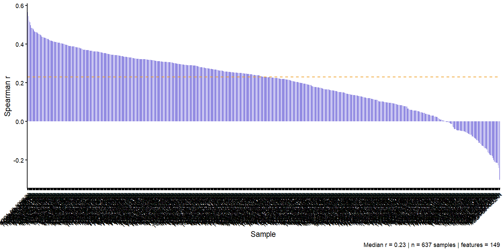
Sample-level Spearman correlation between RNA-seq and RPPA expression profiles in TCGA-BRCA ER-comparison samples. Dashed line = median r. Sorted by decreasing correlation.
8.3 nice_ConcordanceScatter
p_conc <- nice_ConcordanceScatter(
concordance_result = brca_concordance_rna_rppa_er,
x_label = "log2FC (RNA-seq)",
y_label = "log2FC (RPPA)",
genes_label = c("ESR1", "PGR", "GATA3", "ERBB2", "EGFR",
"MKI67", "CDH1", "AR")
)
ggplot2::ggsave(
"vignettes/figures/ConcordanceScatter_RNAseq_RPPA_ERpositive_vs_ERnegative.png",
p_conc, width = 7, height = 7, dpi = 150
)
grDevices::pdf(
"vignettes/figures/ConcordanceScatter_RNAseq_RPPA_ERpositive_vs_ERnegative.pdf",
width = 7, height = 7
)
print(p_conc)
grDevices::dev.off()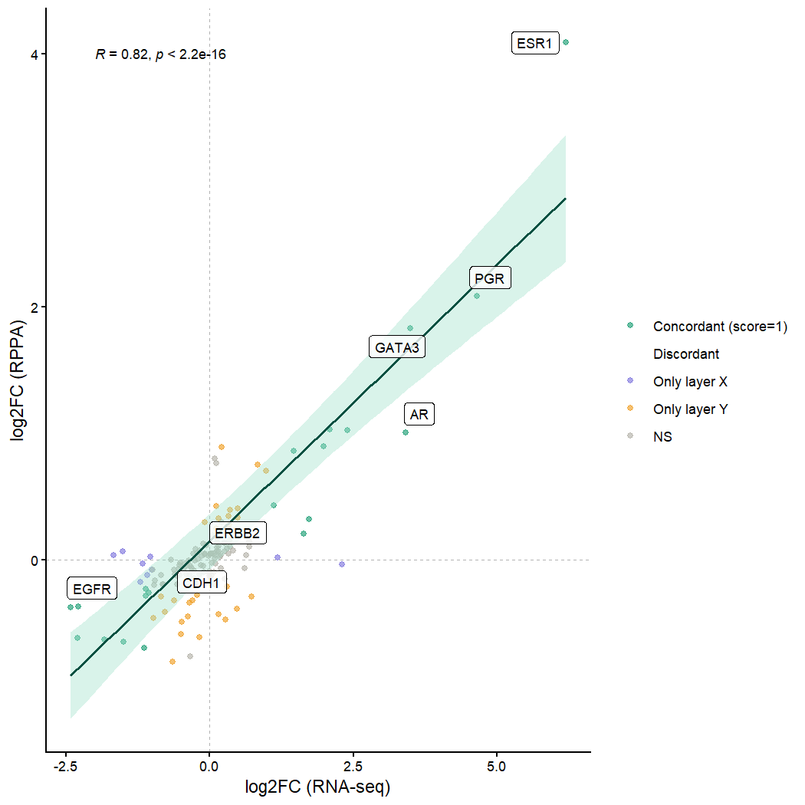
Concordance scatter plot: RNA-seq vs RPPA logFC for ER+ vs ER- comparison. Concordant genes (same direction in both layers) are shown in teal, discordant in orange. Key ER-associated genes are labeled.
9. Gene-level Expression: Violin-Scatter-Box Plots
nice_VSB() displays per-gene expression across sample
groups by combining violin, scatter, and box layers.
get_stars() returns a significance string such as
"***" from a DEA results object for a given gene, enabling
annotation of comparisons. We show biologically relevant BRCA markers:
ESR1, the master regulator of ER signaling and a strong
ER-positive RNA marker; PGR, a progesterone receptor
marker co-expressed with ESR1 in luminal tumors; GATA3,
a luminal transcription factor and robust ER-positive marker; and
ERBB2, the HER2 protein measured by RPPA. Because the
current nice_VSB() implementation uses
sample_type for the x-axis, the plotting annotations below
copy ER_group into sample_type while
preserving ER_group for point color.
nice_VSB() also log2-transforms the supplied matrix
internally, so the displayed code applies a plot-only positive shift
when a normalized matrix contains zero or negative values.
9.1 ESR1 - RNA-seq
# Prepare DEA for get_stars (needs "ensembl" column)
er_res_for_stars <- brca_rna_dea_er_pos_vs_er_neg
colnames(er_res_for_stars)[colnames(er_res_for_stars) == "gene_symbol"] <- "ensembl"
stars_ESR1 <- get_stars(
geneID = "ESR1",
object = er_res_for_stars
)
vsb_rna_expr <- brca_rna_expr_er_shared_filtered
if (min(vsb_rna_expr, na.rm = TRUE) <= 0) {
vsb_rna_expr <- vsb_rna_expr - min(vsb_rna_expr, na.rm = TRUE) + 1e-3
}
vsb_annotations_rna <- brca_rna_metadata_er_shared[
colnames(vsb_rna_expr), , drop = FALSE
]
vsb_annotations_rna$sample_type <- vsb_annotations_rna$ER_group
p_vsb_esr1 <- nice_VSB(
object = vsb_rna_expr,
annotations = vsb_annotations_rna,
variables = c(fill = "ER_group"),
genename = "ESR1",
symbol = paste0("(", stars_ESR1, ")"),
categories = c("ER_negative", "ER_positive"),
labels = c("ER-", "ER+"),
colors = c("steelblue", "firebrick"),
shapes = 21,
markersize = 3
)
ggplot2::ggsave("vignettes/figures/brca_vsb_rna_ESR1.png",
p_vsb_esr1, width = 6, height = 5, dpi = 150)
grDevices::pdf("vignettes/figures/brca_vsb_rna_ESR1.pdf",
width = 6, height = 5)
print(p_vsb_esr1)
grDevices::dev.off()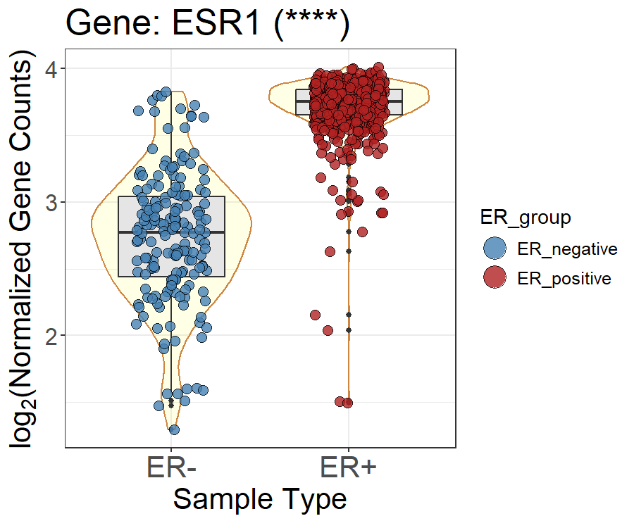
ESR1 RNA-seq expression (log2 normalized counts) across ER-negative and ER-positive TCGA-BRCA primary tumors. ESR1 is the direct target of ER signaling and the most discriminant marker in this comparison.
9.2 PGR - RNA-seq
stars_PGR <- get_stars(geneID = "PGR", object = er_res_for_stars)
p_vsb_pgr <- nice_VSB(
object = vsb_rna_expr,
annotations = vsb_annotations_rna,
variables = c(fill = "ER_group"),
genename = "PGR",
symbol = paste0("(", stars_PGR, ")"),
categories = c("ER_negative", "ER_positive"),
labels = c("ER-", "ER+"),
colors = c("steelblue", "firebrick"),
shapes = 21,
markersize = 3
)
ggplot2::ggsave("vignettes/figures/brca_vsb_rna_PGR.png",
p_vsb_pgr, width = 6, height = 5, dpi = 150)
grDevices::pdf("vignettes/figures/brca_vsb_rna_PGR.pdf",
width = 6, height = 5)
print(p_vsb_pgr)
grDevices::dev.off()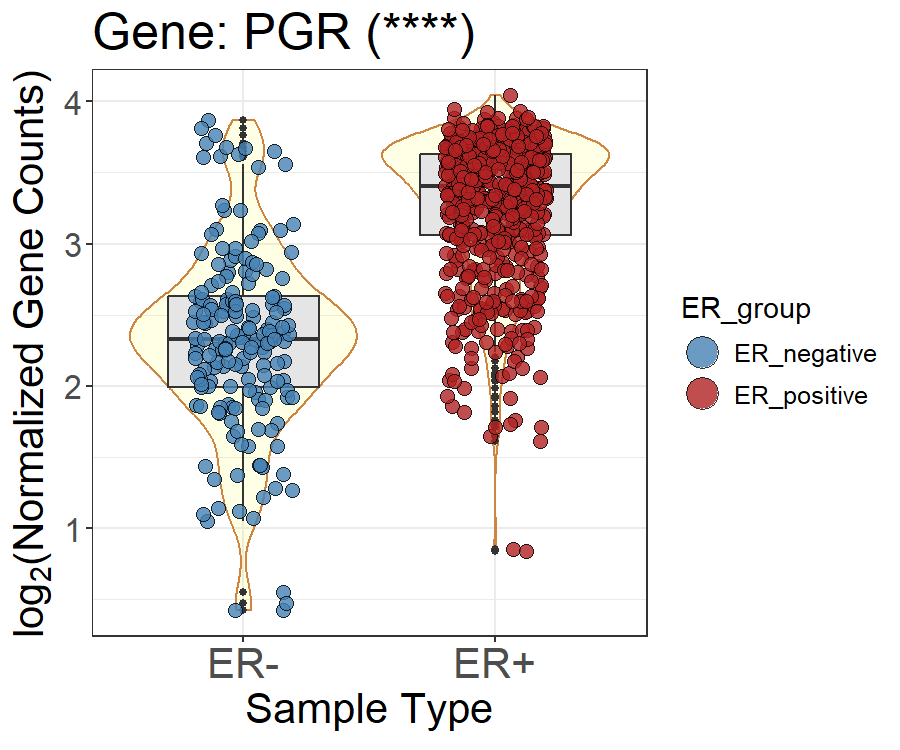
PGR (progesterone receptor) RNA-seq expression in TCGA-BRCA. PGR is a luminal marker co-expressed with ESR1 and part of the canonical ER+ gene program.
9.3 GATA3 - RNA-seq
stars_GATA3 <- get_stars(geneID = "GATA3", object = er_res_for_stars)
p_vsb_gata3 <- nice_VSB(
object = vsb_rna_expr,
annotations = vsb_annotations_rna,
variables = c(fill = "ER_group"),
genename = "GATA3",
symbol = paste0("(", stars_GATA3, ")"),
categories = c("ER_negative", "ER_positive"),
labels = c("ER-", "ER+"),
colors = c("steelblue", "firebrick"),
shapes = 21,
markersize = 3
)
ggplot2::ggsave("vignettes/figures/brca_vsb_rna_GATA3.png",
p_vsb_gata3, width = 6, height = 5, dpi = 150)
grDevices::pdf("vignettes/figures/brca_vsb_rna_GATA3.pdf",
width = 6, height = 5)
print(p_vsb_gata3)
grDevices::dev.off()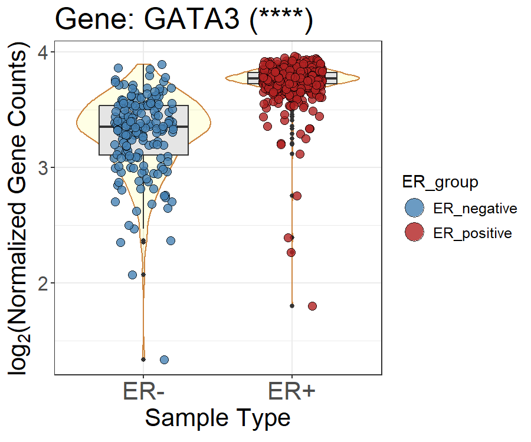
GATA3 RNA-seq expression in TCGA-BRCA. GATA3 is a luminal transcription factor and a robust marker of ER-positive breast tumors, also used in clinical diagnostics.
9.4 ERBB2 - RPPA protein level
# RPPA get_stars: use RPPA DEA table
rppa_res_for_stars <- brca_rppa_dea_gene_er_pos_vs_er_neg
colnames(rppa_res_for_stars)[colnames(rppa_res_for_stars) == "gene"] <- "ensembl"
stars_ERBB2 <- get_stars(geneID = "ERBB2", object = rppa_res_for_stars)
vsb_rppa_expr <- brca_rppa_expr_gene_er_shared
if (min(vsb_rppa_expr, na.rm = TRUE) <= 0) {
vsb_rppa_expr <- vsb_rppa_expr - min(vsb_rppa_expr, na.rm = TRUE) + 1e-3
}
stopifnot("ERBB2" %in% rownames(vsb_rppa_expr))
vsb_annotations_rppa <- brca_rna_metadata_er_shared[
colnames(vsb_rppa_expr), , drop = FALSE
]
vsb_annotations_rppa$sample_type <- vsb_annotations_rppa$ER_group
p_vsb_erbb2 <- nice_VSB(
object = vsb_rppa_expr,
annotations = vsb_annotations_rppa,
variables = c(fill = "ER_group"),
genename = "ERBB2",
symbol = paste0("RPPA (", stars_ERBB2, ")"),
categories = c("ER_negative", "ER_positive"),
labels = c("ER-", "ER+"),
colors = c("steelblue", "firebrick"),
shapes = 21,
markersize = 3
)
ggplot2::ggsave("vignettes/figures/brca_vsb_rppa_ERBB2.png",
p_vsb_erbb2, width = 6, height = 5, dpi = 150)
grDevices::pdf("vignettes/figures/brca_vsb_rppa_ERBB2.pdf",
width = 6, height = 5)
print(p_vsb_erbb2)
grDevices::dev.off()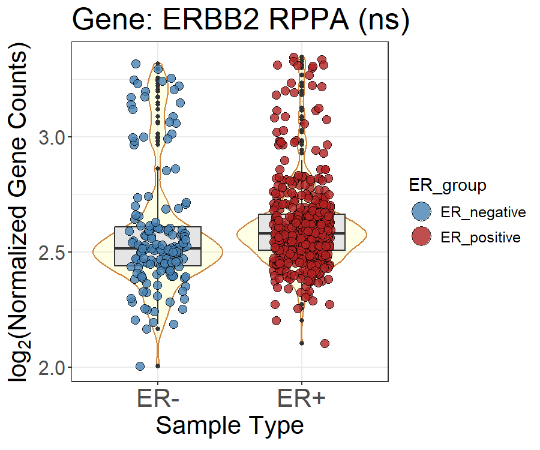
ERBB2 protein signal (RPPA) across ER-negative and ER-positive TCGA-BRCA primary tumors. ERBB2 (HER2) amplification occurs in a subset of both ER groups, generating the bimodal distribution characteristic of this marker.
Reproducibility
Package objects and pre-rendered figures are generated by scripts in
data-raw/brca/. The vignette does not re-run data
preparation to keep build times short and results reproducible across
environments.
sessionInfo()
#> R version 4.4.2 (2024-10-31 ucrt)
#> Platform: x86_64-w64-mingw32/x64
#> Running under: Windows 11 x64 (build 26200)
#>
#> Matrix products: default
#>
#>
#> locale:
#> [1] LC_COLLATE=English_United States.utf8
#> [2] LC_CTYPE=English_United States.utf8
#> [3] LC_MONETARY=English_United States.utf8
#> [4] LC_NUMERIC=C
#> [5] LC_TIME=English_United States.utf8
#>
#> time zone: America/Bogota
#> tzcode source: internal
#>
#> attached base packages:
#> [1] stats graphics grDevices utils datasets methods base
#>
#> other attached packages:
#> [1] OmicsKit_1.0.0.0000
#>
#> loaded via a namespace (and not attached):
#> [1] sass_0.4.10 generics_0.1.4 tidyr_1.3.2
#> [4] lattice_0.22-6 digest_0.6.39 magrittr_2.0.5
#> [7] pROC_1.19.0.1 evaluate_1.0.5 grid_4.4.2
#> [10] RColorBrewer_1.1-3 fastmap_1.2.0 Matrix_1.7-1
#> [13] jsonlite_2.0.0 umap_0.2.10.0 RSpectra_0.16-2
#> [16] backports_1.5.1 survival_3.8-6 purrr_1.2.2
#> [19] scales_1.4.0 textshaping_1.0.5 jquerylib_0.1.4
#> [22] cli_3.6.6 rlang_1.2.0 splines_4.4.2
#> [25] withr_3.0.3 cachem_1.1.0 yaml_2.3.12
#> [28] otel_0.2.0 tools_4.4.2 dplyr_1.2.1
#> [31] ggplot2_4.0.3 BiocGenerics_0.52.0 reticulate_1.46.0
#> [34] broom_1.0.13 tsne_0.2-0 png_0.1-9
#> [37] vctrs_0.7.3 R6_2.6.1 stats4_4.4.2
#> [40] lifecycle_1.0.5 S4Vectors_0.44.0 fs_2.1.0
#> [43] htmlwidgets_1.6.4 ragg_1.5.2 pkgconfig_2.0.3
#> [46] desc_1.4.3 pkgdown_2.2.0 pillar_1.11.1
#> [49] bslib_0.10.0 gtable_0.3.6 glue_1.8.1
#> [52] Rcpp_1.1.1-1.1 systemfonts_1.3.2 xfun_0.54
#> [55] tibble_3.3.1 tidyselect_1.2.1 rstudioapi_0.18.0
#> [58] knitr_1.51 dichromat_2.0-0.1 farver_2.1.2
#> [61] htmltools_0.5.9 patchwork_1.3.2 labeling_0.4.3
#> [64] rmarkdown_2.31 compiler_4.4.2 S7_0.2.2
#> [67] askpass_1.2.1 openssl_2.4.2